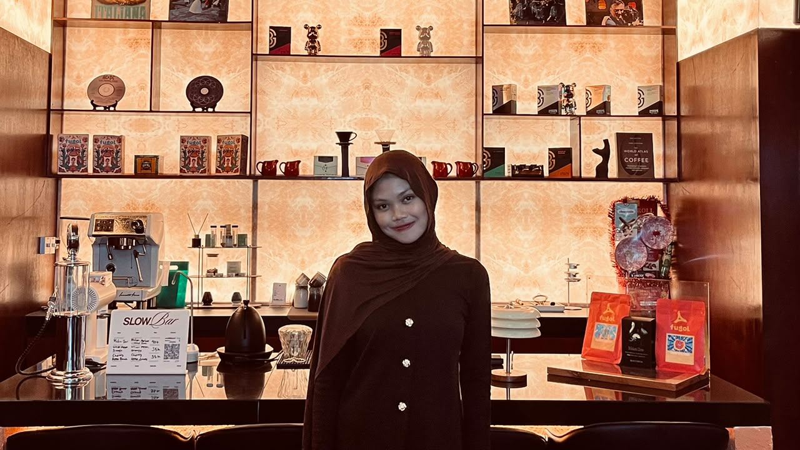

Website Portofolio
Situs yang sedang Anda lihat. Ditulis dengan HTML, CSS, dan JavaScript, disimpan di GitHub dan otomatis tayang lewat Vercel.
♡ catatan PARTISI ♡ sisfo untan ♡ catatan PARTISI ♡ sisfo untan ♡ catatan PARTISI ♡ sisfo untan ♡ catatan PARTISI ♡ sisfo untan
✿ hai hai, aku
Mahasiswa Sistem Informasi | Yang percaya bahwa, kesempatan bukan untuk ditunggu, melainkan diraih dengan keberanian untuk memulai

ATentang saya
Halo, saya Ganis Khumairah Mahasiswa Sistem Informasi di Universitas Tanjungpura yang percaya bahwa pengalaman terbaik akan di dapat ketika kamu berani keluar dari zona nyaman dan mencoba hal baru. Saya adalah seseorang yang selalu penasaran dan tidak takut mencoba hal-hal baru, karena bagi saya setiap langkah pertama adalah awal dari cerita yang berharga. Di luar dunia kuliah, saya menemukan semangat dan energi lewat olahraga. Berolahraga mengajarkan saya tentang disiplin, ketekunan, dan arti bangkit setelah jatuh, nilai-nilai yang juga saya bawa dalam belajar dan berkarya. Bagi saya, hidup adalah tentang terus bertumbuh dan menjadi lebih baik disetiap harinya. Jadi, mari berkenalan dan bertumbuh menjadi lebih baik bersama saya!
NIM H1101261017
Pendidikan & pengalaman
Fakultas MIPA, Universitas Tanjungpura.
Jurusan IPA, Pernah Menjadi Anggota Osis, dan sering berpatisipasi dalam lomba didalam sekolah maupun mewakili sekolah.
Pernah Menjabat Menjadi ketua osis, serta aktif pada kegiatan sekolah dan juga ekstracuricullar volly
Proyek & karya
Situs yang sedang Anda lihat. Ditulis dengan HTML, CSS, dan JavaScript, disimpan di GitHub dan otomatis tayang lewat Vercel.
Program Python berbasis modul terpisah untuk menambah, melihat, mengubah, dan menghapus data mahasiswa.
Rancangan website rekomendasi produk anti UV yang disesuaikan dengan tipe dan warna kulit pengguna lewat kamera.
Catatan PARTISI
Satu kartu untuk setiap materi dari Partisi 1 Dan Partisi 2. Klik kartu untuk membaca ulasan dan refleksinya.
Partisi 1 · Nabil Nur Fauzan & Syukri Mar-Am, S.Kom
HMSI atau Himpunan Mahasiswa Sistem Informasi dibentuk pada 23 Juli 2016. Perannya sebagai sarana komunikatif dan akomodatif, sekaligus penyambung kegiatan akademik dan nonakademik mahasiswa. Salah satu fungsinya adalah menyalurkan informasi tentang lomba-lomba. Visinya adalah mewujudkan mahasiswa Sistem Informasi MIPA yang inovatif dan adaptif.
Dari sesi ini saya jadi paham bahwa HMSI bukan sekadar organisasi, tetapi tempat mahasiswa Sisfo saling terhubung dan mendapat kesempatan, misalnya info lomba. Saya ingin ikut memanfaatkannya untuk menambah pengalaman di luar kelas.
Partisi 1 · Devi Gusmita, S.Kom., M.Kom.
Sistem Informasi adalah hubungan antara teknologi, manajemen, dan bisnis. Jadi bidang ini tidak hanya soal membuat program, tetapi juga bagaimana teknologi dipakai untuk mengelola dan mendukung bisnis. Materi ini juga membahas etika berkomunikasi di lingkungan perkuliahan: menjaga sopan santun saat menyampaikan gagasan dan berkomunikasi hanya pada jam kerja.
Saya baru sadar jurusan ini menuntut tiga kemampuan sekaligus, bukan hanya koding. Soal etika, saya akan lebih memperhatikan cara dan waktu menghubungi dosen maupun senior.
Partisi 2 · Irwansyah
Public speaking adalah teknik memengaruhi pendengar di depan khalayak ramai atau di depan umum. Hal yang perlu dijaga adalah penampilan yang rapi, tata bahasa yang terstruktur, dan kontak mata kepada pendengar. Gesture saat berbicara juga penting agar pendengar nyaman menerima pesan dan percaya pada apa yang disampaikan pembicara.
Ternyata menyampaikan sesuatu dengan baik bukan hanya soal isi, tetapi juga sikap tubuh dan cara menatap pendengar. Saya ingin melatihnya di presentasi kelompok dan kuliah berikutnya.
Partisi 2 · Fitri
Menjaga kesehatan psikologi itu penting, terutama bagi mahasiswa baru yang sedang bertransisi dari bangku SMA ke perkuliahan, karena budaya belajarnya sangat berbeda. Mahasiswa bisa mengalami stres akibat tekanan besar dalam perkuliahan. Untuk mengenal diri lebih dalam, kita diajak menuliskan pengalaman lewat Kompas Jiwa dengan lima poin:
Materi ini mengingatkan saya bahwa merasa kewalahan di awal kuliah itu wajar dan perlu diperhatikan. Menulis lewat Kompas Jiwa membantu saya melihat modal dan celah yang perlu dikembangkan.
Kontak
Kalau ada yang ingin ditanyakan atau diajak kerja bareng, kabari saja.